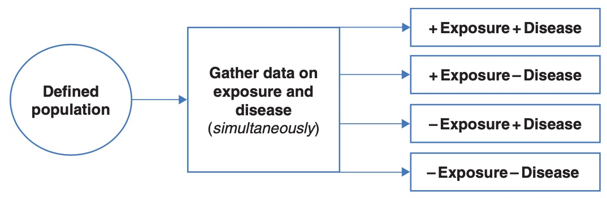
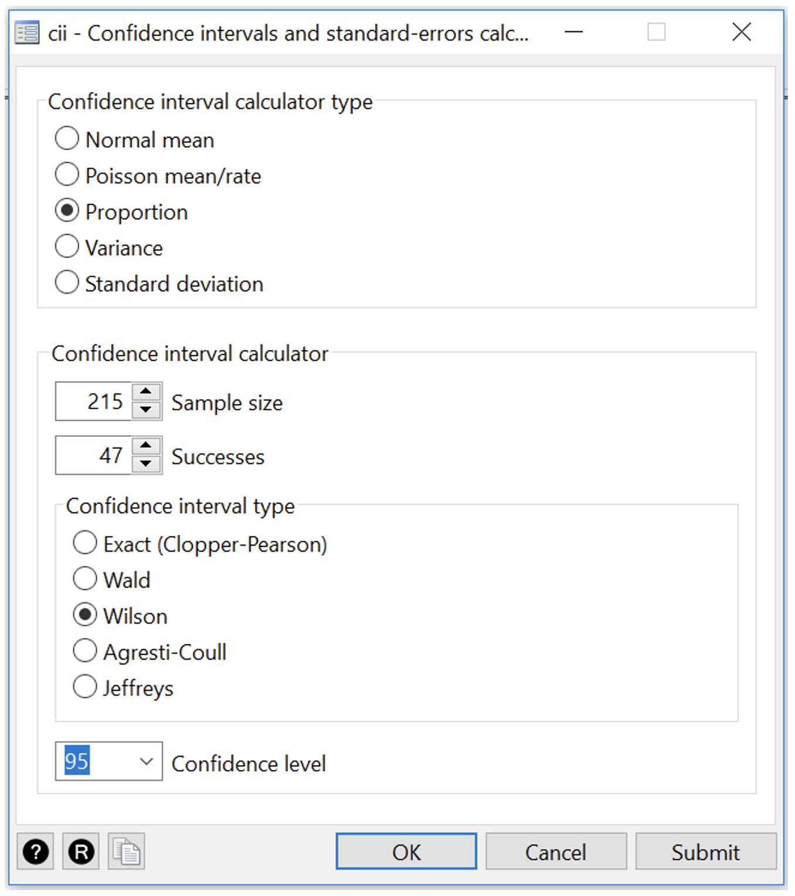
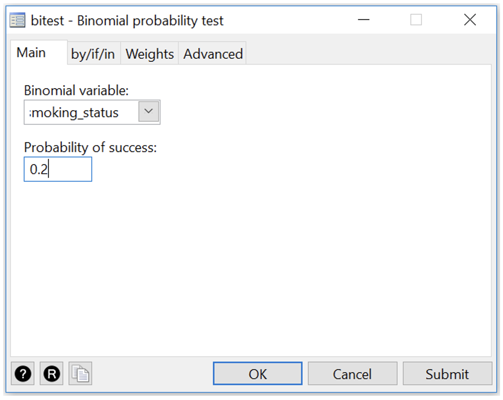
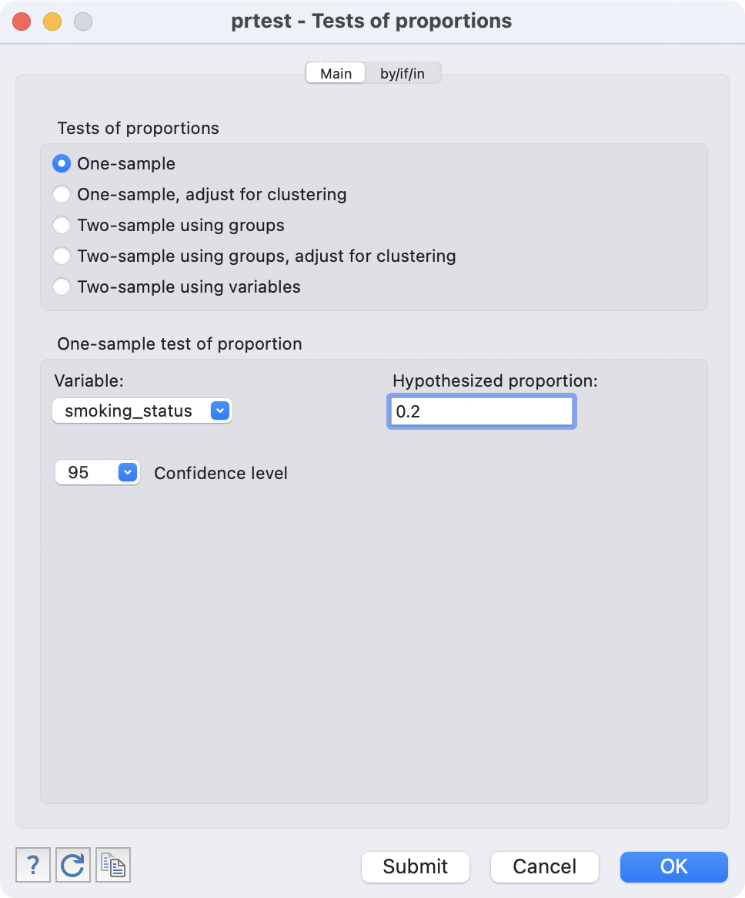
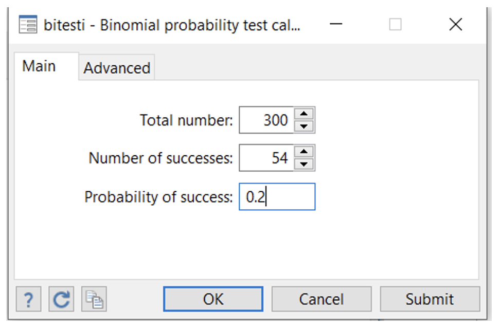
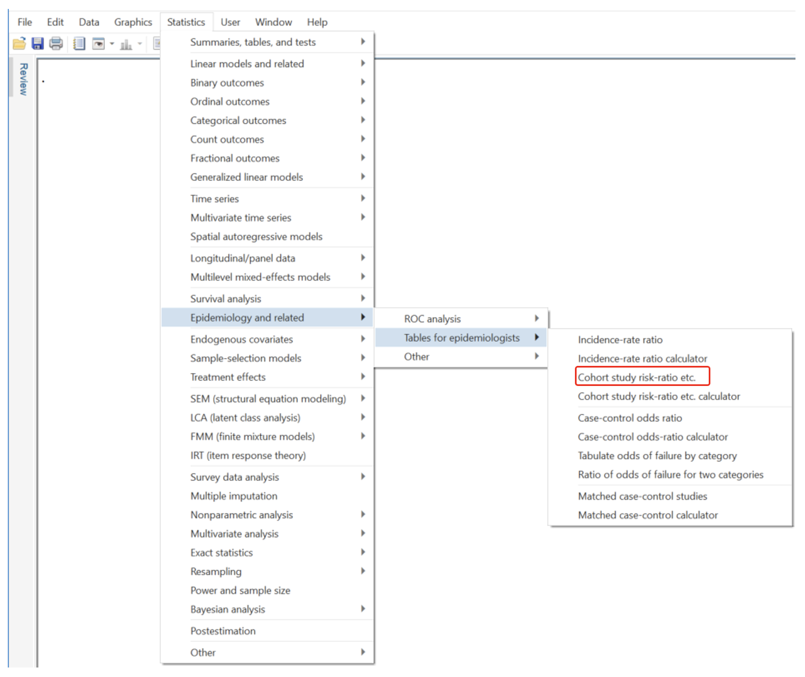
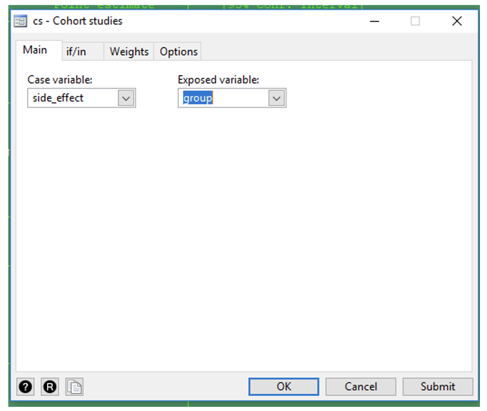
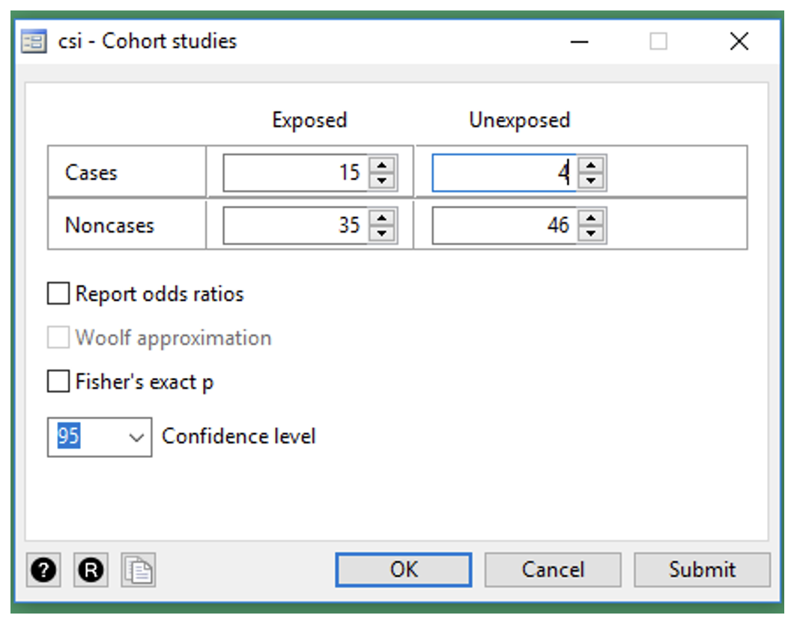
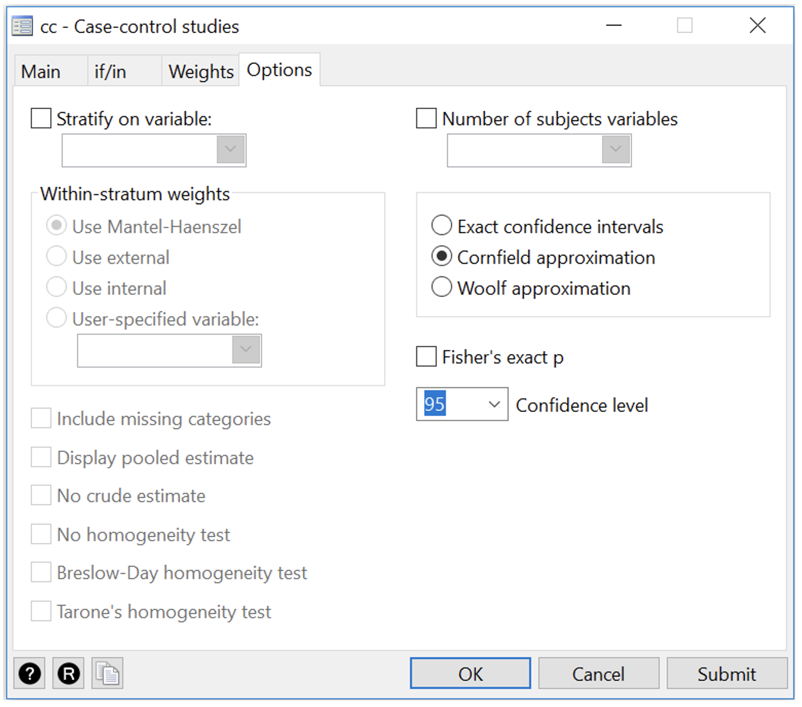
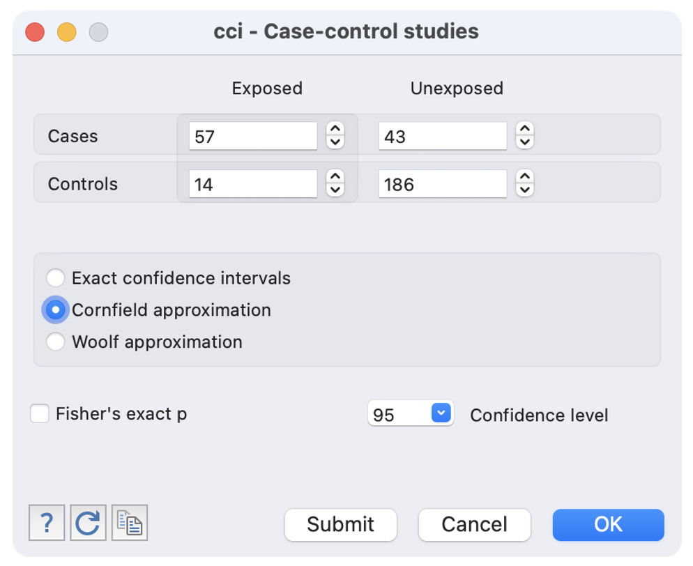

Learning objectives
By the end of this module you will be able to:
- Compute and interpret 95% confidence intervals for proportions;
- Conduct and interpret a significance test for a one-sample proportion;
- Use statistical software to compute 95% confidence intervals for a difference in proportions, a relative risk and an odds ratio.
Optional readings
Kirkwood and Sterne (2001); Chapter 16 [UNSW Library Link]
Bland (2015); Section 8.6, Section 13.7 [UNSW Library Link]
Acock (2010); Section 7.5.
6.1 Introduction
In Modules 4 and 5, we discussed methods used to test hypotheses when the data are continuous. In Modules 6 and 7, we will focus on hypothesis testing for binary categorical data.
In health research, we often collect information that can be put into two categories, e.g. male and female, disease present or disease absent etc. Binary categorical variables such as these are summarised using proportions.
6.2 Calculating proportions and 95% confidence intervals
6.2.1 Calculating a proportion
We need two pieces of information to calculate a proportion: \(n\), the number of trials, and \(k\), the number of ‘successes’. Note that we use the term ‘success’ to describe the outcome of interest, recognising that a success may be a adverse outcome such as death or disease.
The following formula is used to calculate the proportion, \(p\):
\[ p = k / n \]
The proportion, \(p\), is a number that lies between 0 and 1. Proportions and their confidence intervals can easily be converted to percentages by multiplying by 100 once computed.
As for all summary statistics, it is useful to compute the precision of the estimate as a 95% confidence interval (CI) to indicate the range of values in which are 95% confident that the true population value lies. In this module, we present two methods for computing a 95% confidence interval around a proportion.
6.2.2 Calculating the 95% confidence interval of a proportion (Wald method)
The Wald method for calculating the 95% confidence interval is based on assuming that the proportion, \(p\), is Normally distributed. This assumption is reasonable if the sample is sufficiently large (for example, if \(n>30\)) and if \(n \times (1-p)\) and \(n \times p\) are both larger than 5.
The Wald method for calculating a 95% confidence interval is given by:
\[\text{95\% CI} = p \pm (1.96 \times \text{SE}(p))\]
where the standard error of a proportion is computed as:
\[\text{SE}(p) = \sqrt{\frac{p \times (1 - p)}{n}}\]
6.2.3 Worked Example 6.1
In a cross-sectional study of children living in a rural village, 47 children from a random sample of 215 children were found to have scabies. Here \(n=215\) and \(k=47\), so the proportion of children with scabies is estimated as:
\[ p = \frac{47}{215} = 0.2186 \]
Given the large sample size and the number of children with the rarer outcome is larger than 5, the Wald method is used to calculate the standard error of the proportion as:
\[{\text{SE}\left( p \right) = \sqrt{\frac{0.2186 \times (1 - 0.2186)}{215}} }{= 0.02819}\]
Then, the 95% confidence interval is estimated as:
\[\text{95\% CI} = 0.2816 \pm 1.96 \times 0.02819\]
\[= 0.1634 \text{ to } 0.2739\]
The prevalence of scabies among children in the village is 21.9% (95% CI 16.3%, 27.4%). These values tell us that we are 95% confident that the true prevalence of scabies among children in the village is between 16.3% and 27.4%.
6.2.4 Calculating the 95% confidence interval of a proportion (Wilson method)
Another method to calculate the confidence interval of a proportion is the Wilson (sometimes also called the ‘score’) method. We can use it in situations where it is not appropriate to use the normal approximation to the binomial distribution as described above i.e. if the sample size is small (\(n < 30\)) or the number of subjects with the rarer outcome is 5 or fewer. This method much more difficult to implement by hand than the standard confidence interval, and so we will not discuss the hand calculation using the mathematical equation in this course. Instead, we use statistical software to do this (see the Stata or R notes for detail).
When using software, our worked example provides a 95% confidence interval of the prevalence of scabies of 16.9% to 27.9%.
6.2.5 Wald vs Wilson methods
The Wald method, which assumes that the underlying proportion follows a Normal distribution, is easy to calculate and follows the form of other confidence intervals. The Wilson method, which is difficult to calculate by hand, has nicer mathematical properties. There are also a number of other methods for calculating confidence intervals for proportions, but we do not discuss these in this course.
A paper by Brown, Cai and DasGupta (Brown, Cai, and DasGupta (2001)) has compared the properties of the Wald and Wilson methods (among others) and concluded that the Wilson method is preferred over the Wald method. Therefore, we recommend the Wilson method be used to calculate 95% confidence intervals for a proportion.
6.3 Hypothesis testing for one sample proportion
We can carry out a hypothesis test to compare a sample proportion to a hypothesised proportion. In much the same way as a one sample t-test was used in Module 5 to test a sample mean against a hypothesised mean, we can perform a one-sample test to test a sample proportion against a hypothesised proportion. The significance test will provide a P-value to assess the evidence against the null hypothesis, while the 95% confidence interval will provide the range in which we are 95% confident that the true proportion lies.
For example, we can test the following null hypothesis:
H0: sample proportion is not different from the hypothesised proportion
Much like constructing a 95% confidence interval, there are two main options when performing a hypothesis test on a single proportion: the first assumes that the proportion follows a Normal distribution, while the second relaxes this assumption.
6.3.1 z-test for testing one sample proportion
The first step in the z-test is to calculate a z-statistic, which is then used to calculate a P-value. The z-statistic is calculated as the difference between the population proportion and the sample proportion divided by the standard error of the population proportion, i.e.
\[ z = \frac{(p_{sample} - p_{population})}{\text{SE}(p_{population})} \]
This z-statistic is then compared to the standard Normal distribution to calculate the P-value.
6.3.2 Worked Example 6.2
A national census in a country shows that 20% of the population are smokers. A survey of a community within the country that has received a public health anti-smoking intervention shows that 54 of 300 people sampled are smokers (18%). We can calculate a 95% confidence interval around this proportion using the Wilson method, which is calculated as 14.1% to 22.7%.
The researchers are interested in whether the proportion of smoking in this community is the same as the population prevalence of smoking of 20%. The null hypothesis can be written as: H0: the proportion of smokers in the community is 20% (the same as in the national census).
We can test this by calculating a z-statistic:
\[ \begin{aligned} z &= \frac{(0.18 - 0.20)}{\sqrt{\frac{0.20 × (1 - 0.20)}{300}}} \\ &= -0.87 \end{aligned} \]
This z-statistic does not meet or exceed the critical value of 1.96 for a two tailed test. This indicates that there is insufficient evidence to conclude that there is a difference between the proportion of smokers in the community and the country. This is consistent with our 95% confidence interval which crosses the null value of 20%.
The P-value for the test above can be obtained from a Normal distribution table as \(P = 2 × 0.192 = 0.38\) (using Table A2.1 in the Appendix), or using the hand-calculator in Stata.
6.3.3 Binomial test for testing one sample proportion
We can use the binomial distribution to obtain an exact P-value for testing a single proportion. Historically, this was a time consuming process with much hand calculation. These days, statistical software performs the calculations quickly and efficiently, and is the preferred method.
6.3.4 Worked example 6.3
The file mod06_smoking_status.csv contains the data for this example. In the data file, smokers are coded as 1 and non-smokers are coded as 0.
In Stata, we can use the prtest command to perform a z-test, or the bitest command to perform the exact binomial test. In R, we can use the prop.test function to perform a z-test, or the binom.test function to perform the exact binomial test.
The z-test provides a two-sided P-value of 0.39, while the binomial test gives a two-sided P-value of 0.43. Both tests provide little evidence against the hypothesis that the prevalence of smoking in the community is 20%.
6.4 Contingency tables
As introduced in PHCM9794: Foundations of Epidemiology, 2-by-2 contingency tables can be used to examine associations between two binary variables, most commonly an exposure and an outcome. The traditional form of a 2-by-2 contigency table is given in Table 6.1.
| Outcome present | Outcome absent | Total | |
| Exposure present | a | b | a+b |
| Exposure absent | c | d | c+d |
| Total | a+c | b+d | N |
Note for Stata users: It is important to note that Stata presents the exposure or intervention (present, absent) in the columns and the outcome or disease (present, absent) in the rows (e.g. Table 6.2). This is opposite to the way most epidemiological tables are presented, with exposure in rows and outcome in columns. Care must be taken when reading 2-by-2 tables generated from Stata.
| Exposure present | Exposure absent | Total | |
| Outcome present | a | c | a+c |
| Outcome absent | b | d | b+d |
| Total | a+b | c+d | N |
When using a statistics program, it is recommended that the outcome and exposure variables are coded by assigning ‘absent’ as 0 and ‘present’ as 1, for example ‘No’ = 0 and ‘Yes’ = 1. This is needed for some of the commands to work (e.g. the epidemiology table commands). This coding ensures that measures of association, such as the odds ratio or relative risk, are computed correctly by Stata. While R does not require this coding to be followed, it is good practice nonetheless.
6.5 A brief summary of epidemiological study types
In this section, we wil present a very brief summary of three study types commonly used in population health research. This topic is covered in much more detail in PHCM9794: Foundations of Epidemiology, and more detail can be found in Chapter 4 of Essential Epidemiology (3rd or 4th edition) Webb, Bain and Page (Webb, Bain, and Page (2016)).
6.5.1 Randomised controlled trial
A randomised controlled trial addresses the research question: what is the effect of an intervention on an outcome. In the simplest form of a randomised controlled trial, a group of participants is randomly allocated to a group that receives the treatment of interest or to a control group that does not receive the treatment of interest. Participants are followed up over time, and the outcome is measured at the conclusion of the study.

6.5.2 Cohort study
A cohort study is an observational study that addresses the research question: what is the effect of an exposure on an outcome. This research question is similar to that studied in a randomised controlled trial, but the exposure is defined by the participants’ circumstances, and not manipulated by the researchers. In a cohort study, participants without the outcome of interest are enrolled, followed over time, and information on their exposure to a factor is measured (either at baseline or over time). At the conclusion of the study, information on the outcome is measured to identify new (incident) cases.

6.5.3 Case control study
While the randomised controlled trial and cohort study begin with a population without the outcome, a case-control study begins by assembling a group with the outcome of interest (cases), and a group without the outcome of interest (controls). The researchers then ask the cases and controls about their previous exposures.

6.5.4 Cross-sectional study
In a cross-sectional study, the exposure and the outcome are measured at the same time. While this results in a study that is relatively quick to conduct, it does not allow for any temporal relationships to be assessed.

6.6 Measures of effect for epidemiological studies
We can calculate a relative measure of association between an exposure and an outcome as either a relative risk or odds ratio. The relative risk is a direct comparison of the risk in the exposed group with the risk in the non-exposed group, and can only be calculated for a cohort study (including a randomised controlled trial) or a cross-sectional study (where it is also called a prevalence ratio).
For cohort studies, randomised controlled trials and cross-section studies, we can calculate an absolute measure of association between an exposure and an outcome as a difference in proportions (also known as an attributable risk).
For case-control studies, as we sample participants based on their outcome, we can not estimate the risk of the outcome. Hence, calculating a relative risk or risk difference is inappropriate. Instead of calculating risks in a case-control study, we instead calculate odds, where the odds of an event are calculated as the number with the event divided by the number without the event.
| Cases | Controls | Total | |
| Exposure present | a | b | a+b |
| Exposure absent | c | d | c+d |
| Total | a+c | b+d | N |
In the example in Table Table 6.3, we can calculate the odds of being exposed in the cases as \(a \div c\). Similarly, we can calculate the odds of being exposed in the controls as \(b \div d\). We can the calculate the odds ratio as:
\[ \begin{aligned} \text{Odds ratio} &= (a \div c) \div (b \div d) \\ &= \frac{a \times d}{b \times c} \\ &= \frac{ad}{bc} \end{aligned} \]
Note that some authors say we should think of the odds ratio being based on the odds of being a case in the exposed group compared to the odds of being a case in the unexposed group. Here, the exposed group comprises cells “a” and “b”, so the odds of being a case in the exposed group is (a/b). Similarly, for the unexposed group, the odds of being exposed is (c/d). So our odds ratio becomes (a/b) / (c/d). If we rearrange this, we get the same odds ratio as above: (ad)/(bc).
The interpretation of an odds ratio is discussed in detail in PHCM9794: Foundations of Epidemiology, and an excerpt is presented here: The meaning of the calculated odds ratio as a measure of association between exposure and outcome is the same as for the rate ratio (relative risk) where:
- An odds ratio >1 indicates that exposure is positively associated with disease (i.e. the exposure may be a cause of disease);
- An odds ratio < 1 indicates that exposure is negatively associated with disease (i.e. the exposure may be protective against disease); and
- An odds ratio = 1 indicates no association between the exposure and the outcome.
In some situations, related to how well controls are recruited into this study, the odds ratio is a close approximation of the relative risk. Therefore, you may see in some published papers of case control studies the OR interpreted as you would interpret a RR. This should be avoided in this course.
6.6.1 Worked Example 6.4
A randomised controlled trial was conducted among a group of patients to estimate the side effects of a drug. Fifty patients were randomly allocated to receive the active drug and 50 patients were allocated to receive a placebo drug. The outcome measured was the experience of nausea. The data is given in the files mod06_nausea.dta and mod06_nausea.rds.
A summary table can be constructed as in Table 6.4.
| Nausea | No nausea | Total | |
| Active drug | 15 | 35 | 50 |
| Placebo | 4 | 46 | 50 |
| Total | 19 | 81 | 100 |
We can use Stata or R to calculate the relative risk (RR=3.75) and its 95% confidence interval (1.34 to 10.51). This tells us that nausea is 3.75 times more likely to occur in the active drug group compared with the placebo group. Because this is a randomised controlled trial, the relative risk would be an appropriate measure of association.
We can confirm the estimated relative risk:
\[ \begin{aligned} \text{RR} &= \frac{a / (a+b)}{c / (c+d)} \\ &= \frac{15 / (15+35)}{4 / (4+46)} \\ &= \frac{0.3}{0.08} \\ &= 3.75 \end{aligned} \]
6.6.2 Worked Example 6.5
A case-control study investigated the association between human papillomavirus and oropharyngeal cancer (D'Souza, et al. NEJM 2007), and the results appear in Table 6.5.
| Cases | Controls | Total | |
| (Oropharyngeal cancer) | (No oropharyngeal cancer) | ||
| HPV Positive | 57 | 14 | 71 |
| HPV Negative | 43 | 186 | 229 |
| Total | 100 | 200 | 300 |
The odds ratio is the odds of being HPV positive in cases (those with oropharyngeal cancer) compared to the odds of being HPV positive in the controls (those without oropharyngeal cancer):
\[ \begin{aligned} \text{OR} &= \frac{a / c}{b /d} \\ &= \frac{57 / 43}{14 / 186} \\ &= 17.6 \end{aligned} \]
We can use Stata or R to estimate the odds ratio and its 95% confidence interval. We should use the Cornfield option in Stata to provide a better estimate of the 95% confidence interval. It appears that the jmv package in R does not use the Cornfield approximation to estimate the 95% confidence interval, but uses the Woolf method.
The odds ratio is estimated as 17.6, and its 95% confidence interval is estimated 9.0 to 34.3 (Cornfield, using Stata) or 9.0 to 34.5 (Woolf, using R).
The interpretation of the confidence intervals for both the relative risk and the odds ratio is the same as for the confidence intervals around other summary measures in that it shows the region in which we are 95% confident that the true population estimate lies.
Stata notes
6.7 95% confidence intervals for proportions
To compute the 95% confidence interval for proportions, go to Statistics > Summaries, tables, and tests > Summary and descriptive statistics >Proportion CI calculator. In the cii dialog box as shown below, key in 215 as the Sample size and 47 as the number of Successes. Choose Wald for the normal approximation to binomial distribution CI [Command: cii 215 47, wald] or Wilson for Wilson CI [Command: cii 215 47, wilson].

Stata Output: 95% confidence interval (Wald method)
. cii proportions 215 47, wald
-- Binomial Wald ---
Variable | Obs Proportion Std. Err. [95% Conf. Interval]
-------------+---------------------------------------------------------------
| 215 .2186047 .0281868 .1633595 .2738498Stata Output: 95% confidence interval (Wilson method)
. cii proportions 215 47, wilson
------ Wilson ------
Variable | Obs Proportion Std. Err. [95% Conf. Interval]
-------------+---------------------------------------------------------------
| 215 .2186047 .0281868 .1685637 .27852466.8 Significance test for single proportion
To perform a binomial test using the data from mod06_smoking_status.dta, it is a good idea to check that the variable is dichotomous and numerically coded in 0 and 1 by using the codebook command. [Command: codebook smoking_status]
. codebook smoking_status
--------------------------------------------------------------------------------
smoking_status Smoking status
--------------------------------------------------------------------------------
type: numeric (double)
label: smoking_status
range: [0,1] units: 1
unique values: 2 missing .: 0/300
tabulation: Freq. Numeric Label
246 0 Non-smokers
54 1 SmokersAfter checking the data, perform the binomial probability test by going to Statistics > Summaries, tables, and tests > Classical tests of hypotheses > Binomial probability test. Select Smoking_status as the Binomial variable. The probability we want to test against is entered in the Probability of success box. To test that the sample proportion (0.18) is different from the population proportion of 0.2, we enter 0.2 as the Probability of success.

Click OK or Submit to obtain the following output:
. bitest smoking_status == 0.2
Variable | N Observed k Expected k Assumed p Observed p
-------------+------------------------------------------------------------
smoking_st~s | 300 54 60 0.20000 0.18000
Pr(k >= 54) = 0.825531 (one-sided test)
Pr(k <= 54) = 0.215202 (one-sided test)
Pr(k <= 54 or k >= 66) = 0.427280 (two-sided test)A similar process can be used to conduct a z-test for a single proportion, by choosing Statistics > Summaries, tables, and tests > Classical tests of hypotheses > Proportion test:

. prtest smoking_status == 0.2
One-sample test of proportion Number of obs = 300
------------------------------------------------------------------------------
Variable | Mean Std. Err. [95% Conf. Interval]
-------------+----------------------------------------------------------------
smoking_st~s | .18 .0221811 .1365259 .2234741
------------------------------------------------------------------------------
p = proportion(smoking_st~s) z = -0.8660
Ho: p = 0.2
Ha: p < 0.2 Ha: p != 0.2 Ha: p > 0.2
Pr(Z < z) = 0.1932 Pr(|Z| > |z|) = 0.3865 Pr(Z > z) = 0.8068If you have only the aggregate data then the binomial test can be carried out using the immediate command. For that you will need to go through perform the binomial probability test by going to Statistics > Summaries, tables, and tests > Classical tests of hypotheses > Binomial probability test calculator. Enter the numbers in the appropriate fields as shown below.

[Command: bitesti 300 54 0.2]
6.9 Computing a relative risk and its 95% confidence interval
Using the data file from Worked Example 6.4, to obtain relative risk and its 95% CI, go to Statistics > Epidemiology and related > Tables for epidemiologists > Cohort study risk ratio etc…

In the cs – cohort studies dialog box, select the variable side_effect in the Case variable box, and the variable group in the Exposed variable box.

Click OK or Submit to obtain the following output:
| Group |
| Exposed Unexposed | Total
-----------------+------------------------+------------
Cases | 15 4 | 19
Noncases | 35 46 | 81
-----------------+------------------------+------------
Total | 50 50 | 100
| |
Risk | .3 .08 | .19
| |
| Point estimate | [95% Conf. Interval]
|------------------------+------------------------
Risk difference | .22 | .0723899 .3676101
Risk ratio | 3.75 | 1.33754 10.5137
Attr. frac. ex. | .7333333 | .2523589 .904886
Attr. frac. pop | .5789474 |
+-------------------------------------------------
chi2(1) = 7.86 Pr>chi2 = 0.0050[Command: cs side_effect group]
If you only have the cross-tabulated data (i.e. aggregated), you can go to Statistics > Epidemiology and related > Tables for epidemiologists > Cohort study risk ratio etc. calculator. In the csi dialog box, key in the relevant numbers from the cross-tabulated data (similarly to the cci dialog box above). Click OK or Submit to obtain identical output.

[Command: csi 15 4 35 46]
6.10 Computing an odds ratio and its 95%CI
To obtain an odds ratio and its 95% CI, go to Statistics > Epidemiology and related > Tables for epidemiologists > Case-control odds ratio. The cc dialog box is completed as for the cs dialog box.
To obtain the Cornfield confidence interval, click on the Options tab and select the Cornfield approximation radio button.

Proportion
| Exposed Unexposed | Total exposed
-----------------+------------------------+------------------------
Cases | 57 43 | 100 0.5700
Controls | 14 186 | 200 0.0700
-----------------+------------------------+------------------------
Total | 71 229 | 300 0.2367
| |
| Point estimate | [95% Conf. Interval]
|------------------------+------------------------
Odds ratio | 17.6113 | 9.043258 34.25468 (Cornfield)
Attr. frac. ex. | .9432183 | .8894204 .9708069 (Cornfield)
Attr. frac. pop | .5376344 |
+-------------------------------------------------
chi2(1) = 92.26 Pr>chi2 = 0.0000If you only have the cross-tabulated data (i.e. aggregated), you can go to Statistics > Epidemiology and related > Tables for epidemiologists > Case-control odds ratio calculator. In the cci dialog box, enter the numbers from the cross-tabulated data and select the Cornfield approximation radio button. For example, Worked example 6.5 would be entered as:

R notes
6.11 95% confidence intervals for proportions
We can use the BinomCI(x=, n=, method=) function within the DescTools package to compute 95% confidence intervals for proportions. Here we specify x: the number of successes, n: the sample size, and optionally, the method (which defaults to Wilson’s method).
library(DescTools)
BinomCI(x=47, n=215, method='wald') est lwr.ci upr.ci
[1,] 0.2186047 0.1633595 0.2738498BinomCI(x=47, n=215, method='wilson') est lwr.ci upr.ci
[1,] 0.2186047 0.1685637 0.27852466.12 Significance test for single proportion
We can use the binom.test function to perform a significance test for a single proportion: binom.test(x=, n=, p=). Here we specify x: the number of successes, n: the sample size, and p: the hypothesised proportion (which defaults to 0.5 if nothing is entered).
binom.test(x=54, n=300, p=0.2)
Exact binomial test
data: 54 and 300
number of successes = 54, number of trials = 300, p-value = 0.4273
alternative hypothesis: true probability of success is not equal to 0.2
95 percent confidence interval:
0.1382104 0.2282394
sample estimates:
probability of success
0.18 Note that the binom.test function also produces a 95% confidence interval around the estimated proportion. This confidence interval is based on the inferior Wald method: the confidence interval derived from the Wilson method is preferred.
We can also conduct a z-test for a single proportion:
prop.test(x=54, n=300, p=0.2, correct=FALSE)
1-sample proportions test without continuity correction
data: 54 out of 300, null probability 0.2
X-squared = 0.75, df = 1, p-value = 0.3865
alternative hypothesis: true p is not equal to 0.2
95 percent confidence interval:
0.1406583 0.2274332
sample estimates:
p
0.18 6.13 Computing a relative risk and its 95% confidence interval
We will use Worked Example 6.4 to demonstrate calculating a relative risk and its 95% CI:
library(jmv)
drug <- readRDS("data/examples/mod06_nausea.rds")
summary(drug) group side_effect
Placebo:50 No nausea:81
Active :50 Nausea :19 By using the head() function to view the first six lines of data, we see that both group and side_effect have been entered as factors. Notice the order in which the factor levels are presented: group has the Placebo level defined as the first level, and the Active level defined as the second; side_effect has No nausea defined as the first level, and the Nausea level defined as the second.
We will use jmv to calculate relative risks, odds ratios and risk differences. To calculate these estimates correctly, we must define the positive exposure and positive outcome to be the first level of a factor. When defining an exposure for example, we should define the active treatment or the positive exposure as the first category. When defining an outcome, we should define the category of interest (e.g. disease, or side effect) as the first category.
In this example, we will define Active as the first level in the group factor, and Nausea to be the first level of the side_effect factor.
We can do this using the relevel() function, which re-orders the levels of a factor so that the level specified is defined as the first level, and the others are moved down:
# Define "Active" as the first level of group:
drug$group <- relevel(drug$group, ref="Active")
# Define "Nausea" as the first level of side_effect:
drug$side_effect <- relevel(drug$side_effect, ref="Nausea")Upon re-leveling the factors, we can check that the levels of interest have been defined as the first levels:
summary(drug) group side_effect
Active :50 Nausea :19
Placebo:50 No nausea:81 To construct the 2-by-2 table and calculate a relative risk, we use the contTables() function in jmv. We request the row-percents using pcRow = TRUE and the relative risk and confidence interval using relRisk = TRUE:
contTables(data=drug,
rows=group, cols=side_effect,
pcRow=TRUE, relRisk = TRUE)
CONTINGENCY TABLES
Contingency Tables
──────────────────────────────────────────────────────────────────
group Nausea No nausea Total
──────────────────────────────────────────────────────────────────
Active Observed 15 35 50
% within row 30.00000 70.00000 100.00000
Placebo Observed 4 46 50
% within row 8.00000 92.00000 100.00000
Total Observed 19 81 100
% within row 19.00000 81.00000 100.00000
──────────────────────────────────────────────────────────────────
χ² Tests
─────────────────────────────────────
Value df p
─────────────────────────────────────
χ² 7.862248 1 0.0050478
N 100
─────────────────────────────────────
Comparative Measures
───────────────────────────────────────────────────────
Value Lower Upper
───────────────────────────────────────────────────────
Relative risk 3.750000 ᵃ 1.337540 10.51370
───────────────────────────────────────────────────────
ᵃ Rows comparedIf you only have the cross-tabulated data (i.e. aggregated), you will need to enter your data into a new data frame. For example, to recreate the above analyses, we can re-write the 2-by-2 table as follows:
| Group | side_effect | Number |
|---|---|---|
| Active | Nausea | 15 |
| Active | No nausea | 35 |
| Placebo | Nausea | 4 |
| Placebo | No nausea | 46 |
We can enter these data in a dataframe, comprising three vectors, as follows:
drug_aggregated <- data.frame(
group = c("Active", "Active", "Placebo", "Placebo"),
side_effect = c("Nausea", "No nausea", "Nausea", "No nausea"),
n = c(15, 35, 4, 46)
)We need to define group and side_effect as factors. Here we must define the levels in the order we want the categories to appear in the table. Note that as group and side_effect are entered as text variables, we can omit labels command when defining the factors, and the factor will be labelled using the text entry:
drug_aggregated$group <- factor(drug_aggregated$group,
levels=c("Active", "Placebo"))
drug_aggregated$side_effect <- factor(drug_aggregated$side_effect,
levels=c("Nausea", "No nausea"))We can calculate the relative risk using the summarised data in the same was done previously. However, we need to include the number of observations in each cell using the counts command:
contTables(data=drug_aggregated,
rows=group, cols=side_effect, count=n,
pcRow=TRUE, relRisk = TRUE)
CONTINGENCY TABLES
Contingency Tables
──────────────────────────────────────────────────────────────────
group Nausea No nausea Total
──────────────────────────────────────────────────────────────────
Active Observed 15 35 50
% within row 30.00000 70.00000 100.00000
Placebo Observed 4 46 50
% within row 8.00000 92.00000 100.00000
Total Observed 19 81 100
% within row 19.00000 81.00000 100.00000
──────────────────────────────────────────────────────────────────
χ² Tests
─────────────────────────────────────
Value df p
─────────────────────────────────────
χ² 7.862248 1 0.0050478
N 100
─────────────────────────────────────
Comparative Measures
───────────────────────────────────────────────────────
Value Lower Upper
───────────────────────────────────────────────────────
Relative risk 3.750000 ᵃ 1.337540 10.51370
───────────────────────────────────────────────────────
ᵃ Rows compared6.14 Computing a difference in proportions and its 95% confidence interval
We can use the contTables function to obtain a difference in proportions and its 95% CI, by specifying diffProp=TRUE:
contTables(data=drug,
rows=group, cols=side_effect,
pcRow=TRUE, diffProp=TRUE)
CONTINGENCY TABLES
Contingency Tables
──────────────────────────────────────────────────────────────────
group Nausea No nausea Total
──────────────────────────────────────────────────────────────────
Active Observed 15 35 50
% within row 30.00000 70.00000 100.00000
Placebo Observed 4 46 50
% within row 8.00000 92.00000 100.00000
Total Observed 19 81 100
% within row 19.00000 81.00000 100.00000
──────────────────────────────────────────────────────────────────
χ² Tests
─────────────────────────────────────
Value df p
─────────────────────────────────────
χ² 7.862248 1 0.0050478
N 100
─────────────────────────────────────
Comparative Measures
─────────────────────────────────────────────────────────────────────────
Value Lower Upper
─────────────────────────────────────────────────────────────────────────
Difference in 2 proportions 0.2200000 ᵃ 0.07238986 0.3676101
─────────────────────────────────────────────────────────────────────────
ᵃ Rows compared6.15 Computing an odds ratio and its 95% confidence interval
We can use the contTables function to obtain an odds ratio and its 95% CI, by specifying odds=TRUE. Here we will use the summarised HPV data from Module 6.
hpv <- data.frame(
hpv = c("HPV +", "HPV +", "HPV -", "HPV -"),
cancer = c("Case", "Control", "Case", "Control"),
n = c(57, 14, 43, 186)
)
hpv$cancer <- factor(hpv$cancer, levels=c("Case", "Control"))
hpv$hpv <- factor(hpv$hpv, levels=c("HPV +", "HPV -"))
contTables(data=hpv,
rows=hpv, cols=cancer, count=n,
odds = TRUE)
CONTINGENCY TABLES
Contingency Tables
─────────────────────────────────────
hpv Case Control Total
─────────────────────────────────────
HPV + 57 14 71
HPV - 43 186 229
Total 100 200 300
─────────────────────────────────────
χ² Tests
──────────────────────────────────────
Value df p
──────────────────────────────────────
χ² 92.25660 1 < .0000001
N 300
──────────────────────────────────────
Comparative Measures
──────────────────────────────────────────────────
Value Lower Upper
──────────────────────────────────────────────────
Odds ratio 17.61130 8.992580 34.49041
────────────────────────────────────────────────── Note that 95% confidence intervals for the odds ratio based on jmv differ from those calculated by Stata. It appears that jmv uses the Woolf method to calculate confidence intervals, but this is not documented.
Activities
Activity 6.1
In a clinical trial involving a dietary intervention, 150 adult volunteers agreed to participate. The investigator wanted to know whether this sample was representative of the general population. One interesting finding was that 90 of the participants drink alcohol regularly compared to 70% of the general population.
- State the null hypothesis.
- Calculate the proportion of regular drinkers (and its 95% confidence interval) in the sample using software.
- Conduct a hypothesis test to decide if the sample of volunteers is representative of the population.
- Repeat (b) and (c) using the data saved in Activity_6.1.csv.
Activity 6.2
A survey was conducted of a random sample of upper primary school children to measure the prevalence of asthma using questionnaires completed by the parents. A total of 514 children were enrolled. Use the dataset Activity_S6.2.csv for this activity.
- What type of study was used to collect these data? Based on this, which measure of effect would you use to summarise the association between gender and asthma symptoms?
- Calculate the relevant measure of effect (with its 95% confidence interval).
Activity 6.3
In a study to determine the cause of mortality, 89 people were followed up for 5 years. The participants are classified into two groups of those who did or did not have a heart attack. At the end of the follow-up 15 people died among them 10 had a heart attack. Among the 74 survivors 35 had a heart attack. Present the data in a 2-by-2 table and calculate relative risk of death from heart attack with 95% confidence interval.
Activity 6.4
A study is conducted to test the hypothesis that the observed frequency of a certain health outcome is 30%. If the results yield a CI around the sample proportion that extends from 23.8 to 30.2, what can you say about the evidence against the null hypothesis?
Activity 6.5
In an experiment to test the effect of Vitamin C on IQ scores, the following confidence intervals were estimated around the percentage with improved scores for five different populations (Table 6.6):
Table 6.6: ?(caption)
| Population | % with improved IQ | 95% confidence interval |
| 1 | 35.0 | 32.0 to 38.0 |
| 2 | 29.5 | 25.0 to 34.0 |
| 3 | 43.5 | 42.0 to 45.0 |
| 4 | 30.5 | 20.0 to 41.0 |
| 5 | 24.5 | 21.0 to 28.0 |
- Which CI is the most precise?
- Which CI implies the largest sample size?
- Which CI is the least precise?
- Which CI most strongly supports the conclusion that vitamin C increases IQ score and why?
- Which would most likely to stimulate the investigator to conduct an additional experiment using a larger sample size?